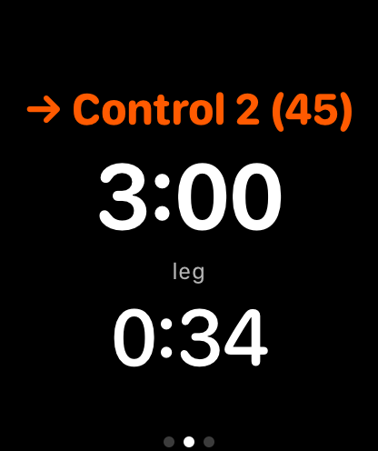
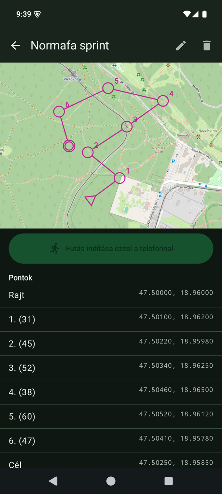
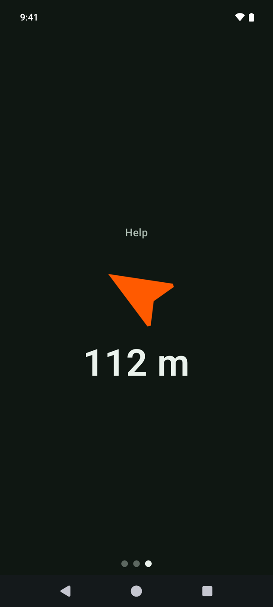

Tájfutó pálya, bóják nélkül. Orienteering courses, without the flags.
Töltsd le a pályát a Livelox-ról, indítsd el a VirtuO appban, és jelzést kapsz a telefonodon vagy az órádon, amikor elérsz egy ellenőrzőpontot. Működik iPhone-on, Apple Watch-on és Androidon is, bármilyen okosórával*. Download the course from Livelox, start it in the VirtuO app, and your phone or watch tells you when you reach a control. Works on iPhone, Apple Watch and Android, with any smartwatch*.
Hogyan működik?How it works
Három lépés, és már futhatsz is. Three steps and you are ready to run.
Töltsd be a pályátLoad a course
Töltsd le a pályát a Livelox-ról, importáld IOF XML (Purple Pen, OCAD) vagy GPX fájlból, vagy írd be a pontok koordinátáit kézzel. Download the course from Livelox, import an IOF XML (Purple Pen, OCAD) or GPX file, or type in the control coordinates.
Indulj elStart running
Küldd át a pályát az órára, vagy futtasd a telefonon. A rajtnál indítsd az időt. Send the course to your watch, or run it on your phone. Start the clock at the start triangle.
Fogd meg a pontokatPunch the controls
Ha a soron következő pont körzetébe érsz, az app rezeg, csipog, és rögzíti a részidőt. When you reach the next control, the app vibrates, beeps and records your split.
FunkciókFeatures
Edzésre készült, tájfutóknak. Made for training, by an orienteer.
Telefon – okosórával vagy anélkülYour phone – with or without a smartwatch
iPhone-on és Android telefonon is működik: a telefon a zsebedben is jelez, bemondja a pontot, és értesítést küld, így az okosórád is rezeg pontfogáskor*.Works on iPhone and Android: your phone tracks you from your pocket, announces each control and sends a notification, so your smartwatch buzzes at every control*.
Saját Apple Watch-appDedicated Apple Watch app
Nagy, jól olvasható számok futás közben, erős rezgés és csipogás pontfogáskor. A pálya átküldése után telefon nélkül is futhatsz vele.Big, easy-to-read numbers while running, strong haptics and a beep at every control. Once the course is on the watch, you can leave your phone at home.
Állítható körzetAdjustable radius
Alapból 15 méteren belül fogadja el a pontot. Ha a GPS nem fogja meg, kézzel is elfogadhatod.Controls are punched within 15 m by default. If GPS misses one, punch it manually.
Rejtett segítségHidden help
Ha elakadsz, egy suhintással megnézheted a távolságot és az irányt a következő pontig.Stuck? One swipe shows the distance and direction to the next control.
Részidők és előzményekSplits and history
Minden futás eltárolódik a részidőkkel együtt. Szünetet is tarthatsz.Every run is saved with its splits. You can pause and resume.
Edzés rögzítése Apple Watch-on – ha kéredWorkout recording on Apple Watch – if you want
Apple Watch-on bekapcsolva a futás edzésként mentődik pulzussal, távval és útvonallal. Alapból kikapcsolva.On Apple Watch, if enabled, the run is saved as a workout with heart rate, distance and route. Off by default.
Fusd újra a versenyeidet – egyenesen a Livelox-rólRe-run your races – straight from Livelox
Nem kell fájlokat keresgélned. Jelentkezz be a Livelox-fiókoddal, keresd meg a versenyt, válaszd ki a kategóriádat, és a pálya már az órádon is van. No files to hunt for. Sign in with your Livelox account, find the event, pick your class, and the course is on your watch.
BejelentkezésSign in
A Livelox saját oldalán lépsz be. A jelszavadat a VirtuO soha nem látja.You sign in on Livelox's own page. VirtuO never sees your password.
Verseny és kategóriaEvent and class
Keress rá a versenyre, és válaszd ki a kategóriát, amit futni szeretnél.Search for the event and choose the class you want to run.
IndulhatszGo
A pálya letöltődik a pontokkal együtt. Fusd le újra, edzésként, a saját tempódban.The course downloads with all its controls. Run it again as training, at your own pace.
Csak a nyilvános pályaadatokat töltjük le. A Livelox név a jogtulajdonosáé; a VirtuO független alkalmazás, nem a Livelox terméke.Only public course data is downloaded. Livelox is a trademark of its owner; VirtuO is an independent app, not a Livelox product.
Így néz kiWhat it looks like
Képek az iPhone-, az Apple Watch- és az Android-appból. Húzd oldalra a többihez.Screens from the iPhone, Apple Watch and Android apps. Swipe for more.
iPhone & Apple Watch



Android




AdatvédelemPrivacy
Röviden: az adataid a te eszközeiden maradnak. In short: your data stays on your devices.
- Nincs fiók, nincs szerver. A pályák és a futások csak a telefonodon és az órádon tárolódnak.
- Helyadatok: a GPS-t csak futás közben használjuk, a pontfogáshoz. A helyzetedet nem küldjük el sehova.
- Apple Egészség app (csak Apple Watch): csak az óra-app ír bele, és csak akkor, ha a beállításokban bekapcsolod, hogy rögzítsen edzést. Az iPhone-app nem ír bele. Más adatot nem olvasunk ki belőle. Androidon nincs ilyen kapcsolat.
- Livelox: ha bejelentkezel, csak a nyilvános pályaadatokat töltjük le. A jelszavadat nem látjuk.
- Nincs reklám és nincs követés.
- No account, no server. Courses and runs are stored only on your phone and watch.
- Location: GPS is used only during a run, to detect controls. Your location is never sent anywhere.
- Apple Health (Apple Watch only): only the watch app writes to it, and only if you turn on workout recording in the settings. The iPhone app does not write to it. We read nothing else. There is no such link on Android.
- Livelox: when you sign in, we only download public course data. We never see your password.
- No ads and no tracking.